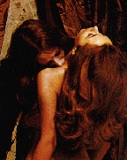

МЕСТНЫЙ ЖИТЕЛЬ
KILBURN

| Раса: |
Человек |
| Пол: |
Мужской
|
| Профессия: |
Вампир |
| Align: |
Chaotic-Evil |
| Клан: |
Invader |
| Религия: |
Нет |
Vampire-male, на момент написания сего уровень 38, align - и так понятно,
Ethos: Chaotic, что вполне оправдывается поведением в Mude... (к моменту написания)
совершил 58 PKillov (недаром у меня title "Man'yachok"), а посему клан близкий
мне по духу - это, очевидно, INVADER'ы...